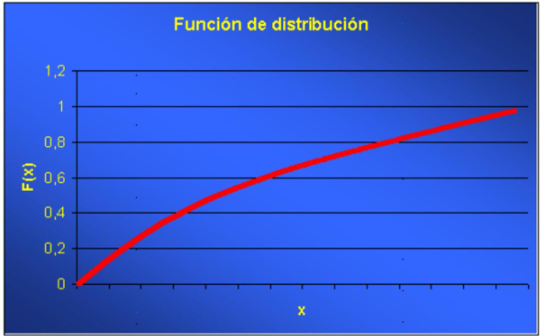
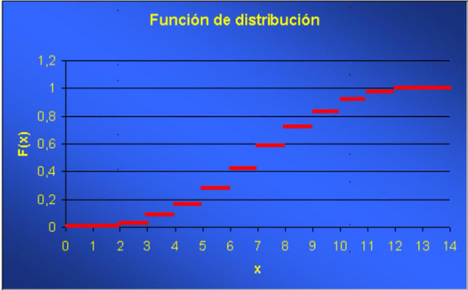
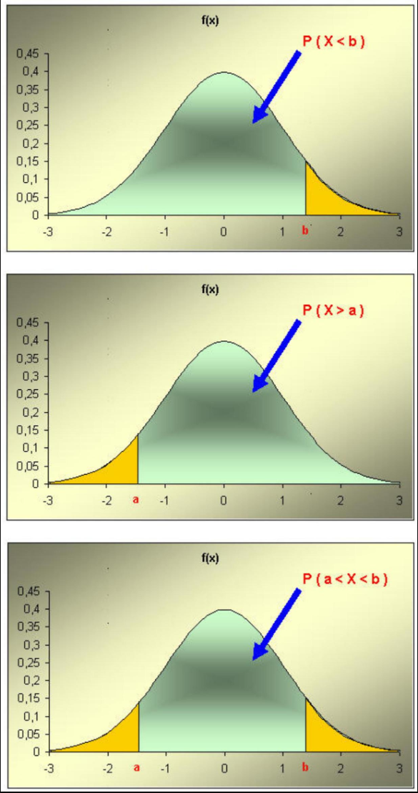
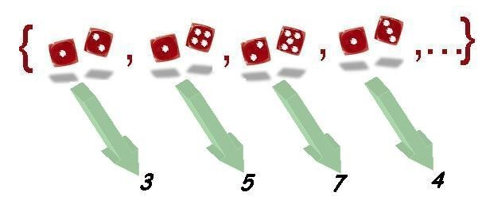
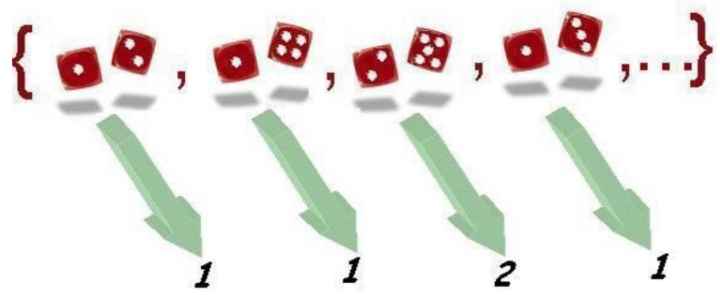
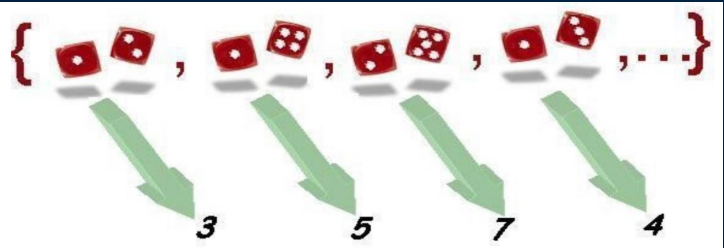
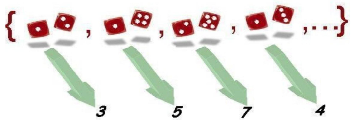
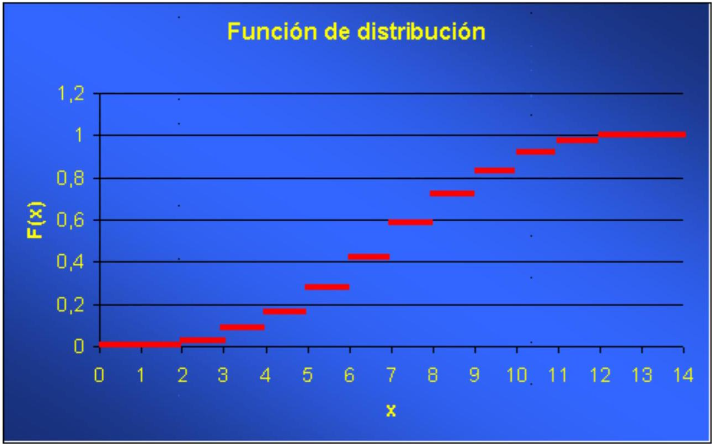
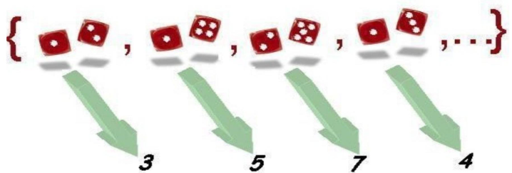
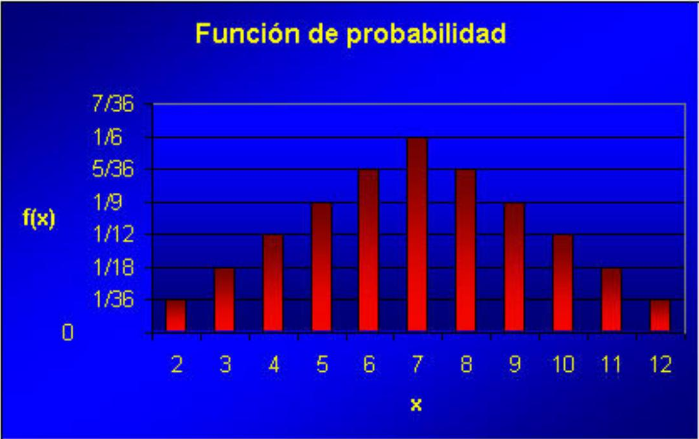

Capítulo 2 Variables aleatorias y Distribuciones de probabilidad
En el capítulo anterior hemos introducido el concepto de probabilidad y como calcular probabilidades asociadas a sucesos observables, formados por uno o mas sucesos elementales, resultado de un experimento aleatorio.
En muchas ocasiones nos interesa representar los resultados de un experimento aleatorio mediante un valor numérico que lo caracterice. Por ejemplo si tiramos tres monedas y contamos el número de caras, nos será indiferente cuando salgan dos caras, en que monedas ha salido una cara y en cual ha salido una cruz.
En la práctica, esto significa que en dichas ocasiones, aunque haya un experimento aleatorio detras de los valores que observamos, tan sólo nos interesan los resultados que expresamos a traves de valores numéricos.
Las variables aleatorias son la forma que hemos desarrollado para trasladar la estructura proporcionada por los espacios de probabilidad el espacio muestral, el conjunto de sucesos elementales, al conjunto de los números, en concreto a la recta real, haciéndolo de tal forma que podamos seguir calculando probabilidades de sucesos observables.
En este capítulo veremos que las variables aleatorias permiten pues transportar la probabilidad del espacio de probabilidad original a la recta real. Para ello, introduciremos una función que es la que se ocupa de ello, la función de distribución de probabilidad.
2.1 El espacio muestral y sus elementos
Cuando llevamos a cabo un experimento aleatorio, el conjunto \(\Omega\) de resultados posibles forman el denominado espacio muestral. Sus elementos \(\omega\) (resultados o sucesos elementales) deben ser conocidos por el investigador que realiza la experiencia, aun cuando no podamos determinar a priori el resultado particular de una realización concreta.
Supondremos que también conocemos la manera de asignar una probabilidad sobre el conjunto de enunciados o sucesos observables que se pueden construir a partir de \(\Omega\). Es decir, supondremos la existencia de un espacio de probabilidad construido a partir de los resultados de \(\Omega\).
Generalmente, la estructura del espacio muestral no permite, o por lo menos no facilita, su tratamiento matemático. Pensemos en la inmensa variedad en la naturaleza de resultados posibles de diferentes experimentos. Además es bastante frecuente que no nos interesen los resultados en sí, sino una característica que, de alguna manera, resuma el resultado del experimento.
2.2 Representación numérica de los sucesos elementales. Variables aleatorias
La forma de resumen que adoptaremos es la asignación a cada suceso elemental de un valor numérico, en particular, de un número real.
En la práctica la asignación de un valor numérico a cada elemento del espacio muestral se hace siguiendo una regla o enunciado, según el interés concreto del experimentador. Evidentemente, podemos construir diversas maneras de asignar valores numéricos a los mismos resultados de un experimento.
Hablando en términos coloquiales, podemos decir que cada regla de asignación corresponde a una determinada variable que se puede medir sobre los sucesos elementales.
Nótese que es posible construir múltiples variables sobre un mismo espacio de probabilidad. En términos algo más formales, las reglas de asignación se pueden interpretar como una aplicación de \(\Omega\) en el conjunto de números reales. \[ \begin{aligned} X: \Omega & \rightarrow \mathbb{R} \\ \omega & \rightarrow X(\omega) \end{aligned} \]
\(X\) representa la variable o regla de asignación concreta. El conjunto de valores numéricos que puede tomar una variable, y que depende de la naturaleza de la misma variable, recibe el nombre de recorrido de la variable.
A partir de este momento, los sucesos elementales quedan substituidos por sus valores numéricos de acuerdo a una determinada variable y permiten un mayor tratamiento matemático en el marco de la teoría de la probabilidad.
El apelativo aleatoria que reciben las variables hace referencia al hecho de que los posibles valores que toman dependen de los resultados de un fenómeno aleatorio que se presentan con una determinada probabilidad.
Como un complemento al tema, al final del capítulo, presentamos la definición formal de variable aleatoria, donde se introducen las restricciones a las reglas de asignación numérica que posibilitan el tratamiento matemático de las variables.
2.3 Caracterización de una variable aleatoria a través de la probabilidad. Función de distribución
Una vez que tenemos definida una variable aleatoria, ésta queda totalmente caracterizada en el momento en que somos capaces de determinar la probabilidad de que la variable tome valores en cualquier intervalo de la recta real. Dado que los posibles valores que puede tomar la variable, es decir, su recorrido, pueden ser muy grandes (infinitos de hecho), el problema de caracterizar una variable aleatoria se resuelve introduciendo una función especial, la función de distribución.
Definición
La función de distribución de una variable aleatoria \(X\) es la aplicación que, a cada punto de la recta real, le asigna la probabilidad del suceso formado por los resultados del experimento que tienen asignado un valor de la variable aleatoria menor o igual a dicho punto.
\[ \begin{array}{rll} F: & \mathbb{R} & \rightarrow[0,1] \\ & x & \rightarrow F(x)=P(X \leq x)=P\{\omega \in \Omega \mid X(\omega) \leq x\} \end{array} \] También podemos decir que es la probabilidad inducida en el intervalo de la recta \((-\infty, x]\)
Hay que hacer notar que siempre será posible determinar dicha probabilidad gracias a los requerimientos exigidos en la definición formal de variable aleatoria. Por tanto, toda variable aleatoria tiene asociada una función de distribución. Nos referimos a esta función cuando decimos que conocemos la distribución de la variable aleatoria.
2.4 Propiedades de la función de distribución
La forma en que hemos definido las funciones de distribución determina que dichas funciones deban de tener las siguientes propiedades:
\(0 \leq F(x) \leq 1. \quad\) Efectivamente, se trata de una probabilidad, por lo que toma valores entre 0 y 1
\(\lim _{x \rightarrow+\infty} F(x)=1. \quad\) A medida que un valor se hace más y más grande, la probabilidad de encontrar valores anteriores a él crece y, en el límite, valdrá uno (el valor máximo para una probabilidad).
\(\lim _{x \rightarrow-\infty} F(x)=0. \quad\) A medida que un valor se hace más y más negativo, la probabilidad de encontrar valores anteriores a él disminuye, y en el límite es cero (el valor mínimo para una probabilidad).
\(x_{1}<x_{2} \Rightarrow F\left(x_{1}\right) \leq F\left(x_{2}\right). \quad\) Por construcción, es una función monótona, es decir, si un valor es inferior a otro, la probabilidad de encontrar valores inferiores al menor de los dos será menor o igual que la de encontrarlos inferiores al mayor de los dos.
\(\lim _{x \rightarrow a^{+}} F(x)=F(a) \quad \forall a \in \mathbb{R}. \quad\) Por la forma en que se ha definido, la función de distribución es contínua por la derecha.
Toda función que verifique las propiedades anteriores es una función de distribución y toda función de distribución caracteriza una determinada variable aleatoria sobre algún espacio de probabilidad.
Las propiedades anteriores determinan la forma de la función de distribución. En concreto, según la variable sea contínua o discreta, conceptos definidos a continuación en el capítulo, la forma de la función será: :
Primer tipo (Variables contínuas)

Segundo tipo (variables discretas)

2.5 Clasificación de las variables aleatorias
Para su estudio, las variables aleatorias se clasifican en variables discretas o variables contínuas.
2.5.1 Variables aleatorias discretas
Definición: Variable aleatoria discreta
Diremos que una variable aleatoria es discreta si su recorrido, es decir, el conjunto de valores que puede tomar, es finito o infinito numerable.
Generalmente, este tipo de variables van asociadas a experimentos en los cuales se cuenta el número de veces que se ha presentado un suceso o donde el resultado es una puntuación concreta.
Los puntos del recorrido se corresponden con saltos en la gráfica de la función de distribución, que correspondería al segundo tipo de gráfica visto anteriormente.
2.5.2 Variables aleatorias continuas
Definición: Variable aleatoria contínua
Diremos que una variable aleatoria es continua si su función de distribución es una función continua.
También puede definirse, de forma análoga a las variables discretas como aquellas cuyo recorrido, es decir, el conjunto de valores que puede tomar, es un intervalo o subconjunto no numerable de los números reales. En otras palabras, aquellas que pueden tomar cualquier valor dentro de un rango continuo, sin saltos entre los valores posibles.
Se corresponde con el primer tipo de gráfica visto.
Generalmente, se corresponden con variables asociadas a experimentos en los cuales la variable medida puede tomar cualquier valor en un intervalo; mediciones biométricas, por ejemplo.
Un caso particular dentro de las variables aleatorias continuas y al cual pertenecen todos los ejemplos usualmente utilizados, son las denominadas variables aleatorias absolutamente continuas.
Definición: Distribución absolutamente contínua
Diremos que una variable aleatoria \(X\) continua tiene una distribución absolutamente continua si existe una función real \(f\), positiva e integrable en el conjunto de números reales, tal que la función de distribución \(F\) de \(X\) se puede expresar como
\[ F(x)=\int_{-\infty}^{x} f(t) d t \]
Una variable aleatoria con distribución absolutamente continua, por extensión, se la clasifica como variable aleatoria absolutamente continua.
Definición: función de densidad de probabilidad
A la función \(f\) se la denomina función de densidad de probabilidad de la variable \(X\).
Hay que hacer notar que no toda variable continua es absolutamente continua, pero los ejemplos son complicados, algunos utilizan para su construcción el conjunto de Cantor, y quedan fuera del nivel y del objetivo de este curso.
Igualmente indicaremos que los tipos de variables comentados anteriormente forman únicamente una parte de todos los posibles tipos de variables, sin embargo contienen prácticamente todas las variables aleatorias que encontramos usualmente.
Tal como se estudiará más adelante, existen algunas familias de funciones de distribución, tanto dentro del grupo de las discretas como de las continuas, que por su importancia reciben un nombre propio y se estudiarán en los capítulos siguientes.
En ocasiones encontramos variables de tipo mixto, es decir que se comportan como discretas o contínuas para distintos grupos de valores.
2.6 Variable aleatoria discretas
Tal como se ha definido, una variable aleatoria \(X\) discreta toma valores en un conjunrto finito o numerables.
Indicaremos el recorrido de la variable \(X\) como: \(\left\{x_{1}, x_{2}, \ldots, x_{\mathrm{k}}, \ldots\right\}\).
El ejemplo más sencillo de variable aleatoria discreta lo constituyen las variables indicadoras. Sea \(A\) un suceso observable, se llama indicador de \(A\) a la variable aleatoria definida por
\[ \begin{aligned} I_{A}: \Omega & \rightarrow \mathbb{R} \\ \omega & \rightarrow I_{A}(\omega)=\left\{\begin{array}{lll} 1 & \text { si } \omega \in A \\ 0 & \text { si } & A \end{array}\right. \end{aligned} \]
2.6.0.1 Ejercicio propuesto
Construir, a partir de las variables indicadoras de \(A\) y \(B\), las siguientes variables indicadoras
\[ I_{A \cap B} ; I_{A \cup B} ; I_{A} c ; I_{\Omega} \]
2.6.1 Caracterización de las v.a. discretas
Una variable aleatoria discreta puede caracterizarse a través de la función que asocia cada elemento del recorrido su probabilidad. Dicha función recibe varios nombres según los autores: - función de probabilidad - ley de probabilidad, - función de densidad de la variable aleatoria discreta. - función de masa de probabilidad.
Aunque es habitual encontrar, en muchos libros el término función de densidad para variables (absolutamente) contínuas y el término función de masa de probabilidad para variables discretas, también lo es referirse a ambas como “función de densidad”.
La función de probabilidad de una variable discreta se puede representar de la manera siguiente:
\[ \begin{array}{rll} f: & \mathbb{R} & \rightarrow[0,1] \\ & x & \rightarrow f(x)=P(X=x)=P\{\omega \in \Omega \mid X(\omega)=x\} \end{array} \]
Obsérvese que, a diferencia de la función de distribución que toma valores para cualquier valor real, la función definida anteriormente es nula en todo punto que no pertenezca al recorrido.
En cambio, siguiendo con la análogía, y dado que se trata de una probabilidad, la función de densidad discreta está acotada \(0 \leq f(x) \leq 1\).
Toda función de densidad discreta puede expresarse de manera explícita a través de una tabla que asocie directamente puntos del recorrido con sus probabilidades.
Ejemplo: Función de densidad de una variable indicadora
Consideremos la variable indicadora del suceso \(A\) :
\[ \begin{aligned} I_{A}: \Omega & \rightarrow \mathbb{R} \\ \omega & \rightarrow I_{A}(\omega)=\left\{\begin{array}{lll} 1 & \text { si } & \omega \in A \\ 0 & \text { si } & A \end{array}\right. \end{aligned} \]
La función de densidad de esta variable sería la siguiente:
| \(x\) | 0 | 1 |
|---|---|---|
| \(f(x)=P(X=x)\) | \(1-P(A)=P\left(A^{\mathrm{c}}\right)\) | \(P(A)\) |
El recorrido está formado por dos valores: 1 y 0 , con las mismas probabilidades que las del suceso \(A\) y su complementario, respectivamente.
En muchos casos será posible expresar la función de probabilidadmediante una fórmula matemática que define una regla de asignación de probabilidades para los valores del recorrido.
Ejemplo: Un modelo matemático para la función de probabilidad
\[ P(X=x)=0,2 \cdot 0,8^{x-1}, \quad x=1,2, \ldots \]
es la función de densidad de una variable aleatoria discreta con recorrido numerable.
2.6.2 Propiedades de la función de densidad discreta
\[ 0 \leq f(x) \leq 1 \]
- \(\sum_{i=1}^{n} f\left(x_{i}\right)=1\), si el recorrido es finito.
- \(\sum_{i=1}^{\infty} f\left(x_{i}\right)=1\), si el recorrido es numerable.
2.6.3 Relaciones entre la función de distribución y la función de densidad discreta.
Probabilidad de intervalos.
Existe una relación muy importante entre las funciones de distribución \(F(x)\) y de densidad \(f(x)\) de una variable aleatoria discreta. La función de distribución en un punto se obtiene acumulando el valor de la función de densidad para todos los valores del recorrido menores o iguales al punto en cuestión.
\[ F(x)=\sum_{x_{i} \leq x} f\left(x_{i}\right) \quad \text { para todo } \mathrm{x}_{\mathrm{i}} \text { perteneciente al recorrido de la variable. } \]
En efecto, supongamos que el recorrido de una variable discreta \(X\) es \(\left\{x_{1}, x_{2}, \ldots, x_{k}, \ldots\right\}\) y que deseamos conocer el valor de la función de distribución en un punto \(x\) tal que \(x_{i} \leq x<x_{i+1}\), entonces es inmediato que
\[ F(x)=P(X \leq x)=P\left(X=x_{1}\right)+P\left(X=x_{2}\right)+\ldots+P\left(X=x_{i}\right)=f\left(x_{1}\right)+f\left(x_{2}\right)+f\left(x_{3}\right)+\ldots+f\left(x_{i}\right) \]
Por ejemplo, para una variable indicadora de un suceso \(A\), tenemos la relación siguiente:
| Valor de \(\boldsymbol{x}\) | \(\boldsymbol{f}(\boldsymbol{x})\) | \(\boldsymbol{F}(\boldsymbol{x})\) |
|---|---|---|
| \((-\infty, 0)\) | 0 | |
| 0 | \(P\left(A^{c}\right)\) | \(P\left(A^{\mathrm{c}}\right)\) |
| \((0,1)\) | \(P\left(A^{\mathrm{c}}\right)\) | |
| 1 | \(P(A)\) | \(P\left(A^{\mathrm{c}}\right)+P(A)=1\) |
| \((1,+\infty)\) | 1 |
A partir de las funciones de densidad y de distribución es posible expresar las probabilidades para cualquier posible intervalo de valores de la variable. Por ejemplo:
| Intervalo |
|---|
| \(P(X \leq a)=F(a)\) |
| \(P(X<a)=F(a)-f(a)\) |
| \(P(X>a)=1-F(a)=1-P(X \leq a)\) |
| \(P(X \geq a)=1-F(a)+f(a)=1-P(X>a)\) |
| \(P(a<X \leq b)=F(b)-F(a)\) |
| \(P(a<X<b)=F(b)-f(b)-F(a)\) |
| \(P(a \leq X \leq b)=F(b)-F(a)+f(a)\) |
| \(P(a \leq X<b)=F(b)-f(b)-F(a)+f(a)\) |
2.7 Variables aleatorias continuas
Una variable aleatoria \(X\) diremos que es continua si su función de distribución es una función continua. En la práctica, se corresponden con variables asociadas con experimentos en los cuales la variable medida puede tomar cualquier valor en un intervalo: mediciones biométricas, intervalos de tiempo, áreas, etc.
Ejemplo: Variables aleatorias continuas
- Resultado de un generador de números aleatorios entre 0 y 1. Es el ejemplo más sencillo que podemos considerar, es un caso particular de una familia de variables aleatorias que tienen una distribución uniforme en un intervalo \([a, b]\). Se corresponde con la elección al azar de cualquier valor entre \(a\) y \(b\).
- Estatura de una persona elegida al azar en una población. El valor que se obtenga será una medición en cualquier unidad de longitud ( m , cm , etc.) dentro de unos límites condicionados por la naturaleza de la variable. El resultado es impredecible con antelación, pero existen intervalos de valores más probables que otros debido a la distribución de alturas en la población. Más adelante veremos que, generalmente, variables biométricas como la altura se adaptan un modelo de distribución denominado distribución Normal y representado por una campana de Gauss.
Dentro de las variables aleatorias continuas tenemos las variables aleatorias absolutamente continuas.
Diremos que una variable aleatoria \(X\) continua tiene una distribución absolutamente continua si existe una función real \(f\), positiva e integrable en el conjunto de números reales, tal que la función de distribución \(F\) de \(X\) se puede expresar como
\[ F(x)=\int_{-\infty}^{x} f(t) d t \]
Una variable aleatoria con distribución absolutamente continua, por extensión, se clasifica como variable aleatoria absolutamente continua.
En cuanto a nuestro manual, todas las variables aleatorias continuas con las que trabajemos pertenecen al grupo de las variables absolutamente continuas, en particular, los ejemplos y casos expuestos.
2.7.1 Función de densidad continua
La función que caracteriza las variables continuas es aquella función \(f\) positiva e integrable en los reales, tal que acumulada desde \(-\infty\) hasta un punto \(x\), nos proporciona el valor de la función de distribución en \(x, F(\mathrm{x})\). Recibe el nombre de función de densidad de la variable aleatoria continua.
\[ F(x)=\int_{-\infty}^{x} f(t) d t \]
Las funciones de densidad discreta y continua tienen, por tanto, un significado análogo, ambas son las funciones que acumuladas (en forma de sumatorio en el caso discreto o en forma de integral en el caso continuo) dan como resultado la función de distribución.
La diferencia entre ambas, sin embargo, es notable.
- La función de densidad discreta toma valores positivos únicamente en los puntos del recorrido y se interpreta como la probabilidad de la que la variable tome ese valor \(f(x)=P(X=x)\).
- La función de densidad continua toma valores en el conjunto de números reales y no se interpreta como una probabilidad. No está acotada por 1, puede tomar cualquier valor positivo. Es más, en una variable continua se cumple que probabilidades definidas sobre puntos concretos siempre son nulas.
\[ P(X=x)=0 \text { para todo } x \text { real. } \]
¿Cómo se interpreta, entonces, la función de densidad continua? Las probabilidades son las áreas bajo la función de densidad. El área bajo la función de densidad entre dos puntos a y b se interpreta como la probabilidad de que la variable aleatoria tome valores comprendidos entre \(a\) y \(b\).
Por tanto, siempre se cumple lo siguiente:
\[ \int_{-\infty}^{+\infty} f(x) d x=1 \]
La función de densidad se expresa a través de una función matemática. La forma específica de la función matemática generalmente pasa por considerar a la variable aleatoria como miembro de una determinada familia de distribuciones, un determinado modelo de probabilidad. Estas familias generalmente dependen de uno o más parámetros y serán objeto de un estudio específico en un capítulo posterior. La atribución a una determinada familia depende de la naturaleza de la variable en cuestión.
Podemos ver, únicamente con ánimo ilustrativo, la expresión analítica y la gráfica para los ejemplos comentados con anterioridad:
- Resultado de un generador de números aleatorios entre \(\boldsymbol{a}\) y \(\boldsymbol{b}\). Modelo Uniforme. \(f(x)=\left\{\begin{array}{cc}\frac{1}{b-a} & x \in[a, b] \\ 0 & x \notin[a, b]\end{array}\right\}\)
- Estatura de una persona elegida al azar en una población. Modelo Normal.
\[ f(x)=\frac{1}{\sqrt{2 \pi}} e^{\frac{-(x-170)^{2}}{2}}-\infty<x<\infty \]
2.7.2 Relaciones entre la función de distribución y la función de densidad.
Para una variable continua, la relación entre las funciones de distribución y de densidad viene dada directamente a través de la definición. La función de distribución en un punto se obtiene integrando el valor de la función de densidad desde menos infinito hasta el punto en cuestión. Por ejemplo:
\[ F(x)=\int_{-\infty}^{x} f(t) d t \]
2.7.2.1 Probabilidad de intervalos
A partir de las funciones de densidad y de distribución, y teniendo en cuenta que \(P(X=x)=0\) para todo \(x\) real, es posible expresar las probabilidades para cualquier posible intervalo de valores de la variable. Por ejemplo:
| Intervalo |
|---|
| \(P(X \leq a)=P(X<a)=F(a)=\int_{-\infty}^{a} f(x) d x\) |
| \(P(X \geq a)=P(X>a)=1-F(a)=\int_{a}^{+\infty} f(x) d x\) |
| \(P(a<X \leq b)=P(a<X<b)=P(a \leq X \leq b)=P(a \leq X<b)\) |
| \(=F(b)-F(a)=\int^{b} f(x) d x\) |
Fijémonos que la probabilidad de los intervalos se corresponde con el área bajo la función de densidad dentro del intervalo considerado.

2.8 Caracterización de una variable aleatoria a través de parámetros
Hasta el momento hemos visto que toda variable aleatoria viene caracterizada a través de unas determinadas funciones matemáticas, las funciones de distribución y de densidad. Una vez caracterizada, y por tanto conocida, la distribución de una variable aleatoria, podemos obtener cualquier probabilidad asociada.
En ocasiones podemos acotar más el problema y reducir el estudio de una variable aleatoria a determinar una serie de características numéricas asociadas con la distribución de la variable. Dichas características tienen como propiedad fundamental el hecho de resumir gran parte de las propiedades de la variable aleatoria y juegan un papel muy destacado en las técnicas estadísticas que desarrollaremos a lo largo del curso.
Por ejemplo, supuesta la pertenencia de una variable aleatoria a una determinada familia de distribuciones de probabilidad, bien sea discreta o continua, los diferentes miembros de la familia diferirán en el valor de esas características numéricas. En este caso, denominaremos a tales características los parámetros de la distribución.
Existe un buen número de tales características, pero nos centraremos en las dos más importantes: la esperanza y la varianza. La primera nos informa sobre la localización de los valores de la variable y la segunda, sobre el grado de dispersión de estos valores.
2.9 Esperanza de una variable aleatoria discreta
La esperanza matemática de una variable aleatoria es una característica numérica que proporciona una idea de la localización de la variable aleatoria sobre la recta real. Decimos que es un parámetro de centralización o de localización.
Su interpretación intuitiva o significado se corresponde con el valor medio teórico de los posibles valores que pueda tomar la variable aleatoria, o también con el centro de gravedad de los valores de la variable supuesto que cada valor tuviera una masa proporcional a la función de densidad en ellos.
La definición matemática de la esperanza en el caso de las variables aleatorias discretas se corresponde directamente con las interpretaciones proporcionadas en el párrafo anterior. Efectivamente, supuesta una variable aleatoria discreta \(X\) con recorrido \(\left\{x_{1}, x_{2}, \ldots, x_{k}, \ldots\right\}\) y con función de densidad \(f(x)\), se define la esperanza matemática de \(X\) como el valor
\[ E(X)=\sum_{x_{i} \in X(\Omega)} x_{i} f\left(x_{i}\right) \]
donde el sumatorio se efectúa para todo valor que pertenece al recorrido de \(X\). En caso de que el recorrido sea infinito la esperanza existe si la serie resultante es absolutamente convergente, condición que no siempre se cumple.
La definición se corresponde con un promedio ponderado según su probabilidad de los valores del recorrido y, por tanto, se corresponde con la idea de un valor medio teórico.
2.10 Esperanza de una variable aleatoria continua
La idea intuitiva que más nos puede ayudar en la definición de la esperanza matemática de una variable aleatoria continua es la idea del centro de gravedad de los valores de la variable, donde cada valor tiene una masa proporcional a la función de densidad en ellos.
Dada una variable aleatoria absolutamente continua \(X\) con función de densidad \(f(x)\), se define la esperanza matemática de \(X\) como el valor
\[ E(X)=\int_{-\infty}^{+\infty} x f(x) d x \]
suponiendo que la integral exista.
2.11 Propiedades de la esperanza matemática
- Esperanza de una función de una variable aleatoria
- Variable discreta
\[ E(h(X))=\sum_{x_{i} \in X(\Omega)} h\left(x_{i}\right) f\left(x_{i}\right) \]
- Variable continua
\[ E(h(X))=\int_{-\infty}^{+\infty} h(x) f(x) d x \]
2.12 Varianza de una variable aleatoria
La varianza de una variable aleatoria es una característica numérica que proporciona una idea de la dispersión de la variable aleatoria respecto de su esperanza. Decimos que es un parámetro de dispersión.
La definición es la siguiente:
\[ \operatorname{Var}(X)=E\left((X-E(X))^{2}\right) \]
Es, por tanto, el promedio teórico de las desviaciones cuadráticas de los diferentes valores que puede tomar la variable respecto de su valor medio teórico o esperanza.
En el caso de las variables discretas, la expresión se convierte en:
\[ \operatorname{Var}(X)=\sum_{x_{i} \in X(\Omega)}\left(x_{i}-E(X)\right)^{2} f\left(x_{i}\right) \]
mientras que para las variables continuas tenemos:
\[ \operatorname{Var}(X)=\int_{-\infty}^{+\infty}(x-E(X))^{2} f(x) d x \]
En ambos casos existe una expresión equivalente alternativa y generalmente de cálculo más fácil:
\[ \operatorname{Var}(X)=E\left(X^{2}\right)-(E(X))^{2} \]
Una de las características de la varianza es que viene expresada en unidades cuadráticas respecto de las unidades originales de la variable. Un parámetro de dispersión derivado de la varianza y que tiene las mismas unidades de la variable aleatoria es la desviación típica, que se define como la raíz cuadrada de la varianza.
\[ \sigma_{X}=\sqrt{\operatorname{Var}(X)}=\sqrt{E\left((X-E(X))^{2}\right)} \]
2.12.1 Propiedades de la varianza
- \(\operatorname{Var}(X) \geq 0\)
- \(\operatorname{Var}(k \cdot X)=k^{2} \cdot \operatorname{Var}(X)\) para todo numero real \(k\).
- \(\operatorname{Var}(k)=0\) para todo numero real \(k\).
- \(\operatorname{Var}(a \cdot X+b)=a^{2} \cdot \operatorname{Var}(X)\) para todo par de números reales \(a\) i \(b\).
- \(\operatorname{Var}(X+Y)=\operatorname{Var}(X)+\operatorname{Var}(Y)\) únicamente en el caso que \(X\) y \(Y\) sean independientes.
2.13 Momentos (de orden \(k\)) de una variable aleatoria
- Dada una variable aleatoria \(X\), definimos el momento de orden \(k\) como:
\[ m_{k}=E\left(X^{k}\right) \]
suponiendo que tal esperanza exista. Podemos ver que la esperanza es el momento de orden \(1, E(X)=m_{1}\).
- Definimos el momento central de orden \(k\) como:
\[ \mu_{k}=E\left((X-E(X))^{k}\right) \]
Con la denominación anterior, la varianza es el momento central de orden \(2, \operatorname{Var}(X)=\mu_{2}\).
- Es posible también definir momentos mixtos de dos variables aleatorias. Dadas dos variables aleatorias \(X\) e \(Y\) definimos el momento mixto de orden \((r, k)\) como
\[ m_{r k}=E\left(X^{r} \cdot Y^{k}\right) \]
y el momento mixto central de orden \((r, k)\) como
\[ \left.\mu_{r k}=E(X-E(X))^{r} \cdot(Y-E(Y))^{k}\right) \]
- El momento mixto central más importante es el \(\mu_{11}\), denominado la covarianza de \(X\) e \(Y\), y con una interpretación en el sentido de cuantificar el grado de dependencia entre dos variables aleatorias, puesto que si \(X\) e \(Y\) son independientes se verifica que \(\mu_{11}=0\), mientras que si \(\mu_{11} \neq 0\) entonces las variables son dependientes.
2.14 Definición formal de variable aleatoria
Tal como hemos comentado, la definición formal de variable aleatoria impone una restricción matemática en la formulación vista hasta el momento.
Definiremos una variable aleatoria como una aplicación de \(\Omega\) en el conjunto de números reales
\[ \begin{aligned} X: \Omega & \rightarrow \mathbb{R} \\ \omega & \rightarrow X(\omega) \end{aligned} \] que verifique la propiedad siguiente
\[ \forall x \in \mathbb{R} \quad \text { el conjunto } \mathrm{A}=\{a \mid \mathrm{X}(a) \leq \mathrm{x}\} \text { es un suceso observable } \]
es decir, para todo número real \(x\), el conjunto de resultados elementales tales que la variable aleatoria toma sobre ellos valores inferiores o iguales a \(x\) ha de ser un suceso sobre el cual podamos definir una probabilidad.
Dicha propiedad recibe el nombre de medibilidad y por tanto podríamos decir que una variable aleatoria es una función medible de \(\Omega\) en los reales.
Esta condición nos asegura que podremos calcular sin problemas, probabilidades sobre intervalos de la recta real a partir de las probabilidades de los sucesos correspondientes.
\[ P(X \leq x)=P\{\omega \mid X(\omega) \leq x\} \]
La expresión anterior se leería de la manera siguiente: La probabilidad de que la variable aleatoria tome valores inferiores o iguales a \(x\) es igual a la probabilidad del suceso formado por el conjunto de resultados elementales sobre los que el valor de la variable es menor o igual que \(x\).
La probabilidad obtenida de esta manera se denomina probabilidad inducida. Se puede comprobar que, a partir de la condición requerida, se pueden obtener probabilidades sobre cualquier tipo de intervalo de la recta real. Por ejemplo:
\[ P(a<X \leq b)=P(X \leq b)-P(X \leq a) \]
La condición exigida para ser variable aleatoria discreta ahora puede ser expresada como:
\[ \forall k=1,2, \ldots \text { el conjunto } \mathrm{A}=\left\{\omega \mid \mathrm{X}(\omega)=\mathrm{x}_{\mathrm{k}}\right\}=\mathrm{X}^{-1}\left(\left\{\mathrm{x}_{\mathrm{k}}\right\}\right) \text { es un suceso observable } \]
Toda variable aleatoria definida sobre un espacio de probabilidad finito es necesariamente discreta. La suma y el producto de variables aleatorias discretas, definido por:
\[ (X+Y)(w)=X(w)+Y(w) \text { y }(X \cdot Y)(w)=X(w) \cdot Y(w) \]
es también una variable aleatoria discreta.
2.15 Caso práctico: Lanzamiento de dos dados
2.15.1 Espacio muestral
Supongamos que estamos realizando un experimento consistente en el lanzamiento simultáneo de dos dados y en la observación del resultado obtenido.
El conjunto de resultados posibles forma el espacio muestral \(\Omega\) asociado a dicho experimento. Sus elementos serán como los que se muestran a continuación:
En total, el espacio muestral estaría formado por 36 resultados posibles que, en principio y suponiendo los dados regulares, son todos ellos equiprobables con probabilidad \(1 / 36\).
Nótese que consideramos diferentes resultados del tipo: un uno en el primer dado y un dos en el segundo o un dos en el primer dado y un uno en el segundo.
Una vez fijados los enunciados anteriores, es fácil asignar probabilidades a diferentes sucesos observables, por ejemplo:
| Suceso | Probabilidad |
|---|---|
| Que aparezcan dos cifras iguales | \(6 \cdot 1 / 36=1 / 6\) |
| Que la suma sea 10 | \(3 \cdot 1 / 36=1 / 12\) |
No entramos en detalles de la obtención de las probabilidades dado que se ha estudiado suficientemente en el tema anterior.
2.15.2 Representación numérica
Continuando con el experimento anterior, podemos representar los resultados obtenidos al lanzar dos dados por valores numéricos. ¿Cómo hacerlo? Definiendo una regla de asignación numérica para cada resultado.
Una posible regla sería, por ejemplo, asignar a cada resultado la suma de puntos de las caras. Este enunciado nos define una variable que representa cada suceso elemental por un valor numérico.

Los 36 posibles resultados del experimento se transforman en 11 posibles valores numéricos para la variable: \(2,3,4,5,6,7,8,9,10,11\) y 12 .
Este conjunto de valores forman el recorrido de la variable suma de puntos de las caras. A partir de las probabilidades definidas sobre los sucesos observables es fácil extender las probabilidades a los diferentes resultados de la variable.
Por ejemplo, la probabilidad de que la variable tome el valor 10 es equivalente a la probabilidad del suceso observable que la suma sea 10 , calculada anteriormente e igual a \(1 / 12\).
La variable considerada hasta el momento es sólo una de las múltiples variables que podríamos definir sobre el mismo experimento. Por ejemplo, podemos estar interesados no en la suma de puntos sino en el punto más bajo de cada tirada, de forma que podríamos construir una nueva variable a partir del enunciado o regla de asignación asignar a cada resultado el menor de los puntos de las dos caras. Tenemos una nueva variable sobre el mismo espacio anterior.

El recorrido, en este caso, está formado por los valores: \(1,2,3,4,5\) y 6 . Las dos variables estudiadas y otras muchas que se podrían definir sobre este experimento son ejemplos absolutamente equivalentes desde el punto de vista formal.
2.15.3 Algunas probabilidades
En el ejemplo de los dados vamos a centrarnos en la variable aleatoria
\[ X=\text { Suma de puntos de las caras } \]

El recorrido de la variable está formado por los números \(\{2,3,4,5,6,7,8,9,10,11\) i 12\(\}\). Vamos a calcular algunas probabilidades:
- \(P(X \leq 1)=P\{\varnothing\}=0\) (Ningún resultado tiene asignado un valor menor o igual a 1)
- \(P(X \leq 2)=P\{(1,1)\}=1/36\) (Sólo hay un caso al que se le asigne un valor inferior o igual a 2).
- \(P(X \leq 3.5)=P\{(1,1), (1,2), (2,1)\}=3/36\) (Tres resultados elementales tienen asignado un valor menor o igual a 3.5)
Ahora podéis intentar calcular por vosotros mismos algunas probabilidades: (a) \(P(X \leq 6)\) (b) \(P(X \leq 8,2)\); (c) \(P(X \leq 12)\); (d) \(P(X \leq 20)\) i (e) \(P(2,2<X \leq 7)\)
2.15.4 Función de distribución
Para calcular la función de distribución de la variable X \(=\) Suma de puntos de las caras :

necesitamos conocer el recorrido de la variable, que es: \(\{2,3,4,5,6,7,8,9,10,11, 12\}\) y, utilizando este recorrido como pauta, determinar para todo punto \(x\) de la recta real la probabilidad \(P(X \leq x)\).
En nuestro ejemplo:
\[ F(x)=P(X \leq x)= \begin{cases}0 & x<2 \\ 1 / 36 & 2 \leq x<3 \\ 3 / 36 & 3 \leq x<4 \\ 6 / 36 & 4 \leq x<5 \\ 10 / 36 & 5 \leq x<6 \\ 15 / 36 & 6 \leq x<7 \\ 21 / 36 & 7 \leq x<8 \\ 26 / 36 & 8 \leq x<9 \\ 30 / 36 & 9 \leq x<10 \\ 33 / 36 & 10 \leq x<11 \\ 35 / 36 & 11 \leq x<12 \\ 36 / 36=1 & x \geq 12\end{cases} \]
Acabamos de construir la función de distribución de la variable suma de la puntuación al lanzar dos dados.
Vamos a ver su representación gráfica:

Ejercicio : Haced lo mismo para la variable aleatoria el menor de los puntos de las dos caras al lanzar dos dados.
2.15.5 Clasificación de las variables
En el experimento que estamos considerando, lanzar simultáneamente dos dados, cualquiera de las dos variables aleatorias que hemos considerado hasta el momento:
\[ X=\text {Suma los puntos de las dos caras } \]
\[ Y=\text { El menor de los puntos de las dos caras } \]
se clasifican dentro del tipo de variables aleatorias discretas, puesto que en ambos casos el recorrido es finito: \(\{2,3,4,5,6,7,8,9,10,11, 12\}\) para la variable \(X\) y \(\{1,2,3,4,5, 6\}\) para la variable \(Y\).
También son discretas aquellas variables aleatorias con recorrido infinito numerable.
Ejercicio: ¿Sabríais construir una variable aleatoria discreta con recorrido infinito numerable basada en el experimento que consiste en el lanzamiento de dos dados?
2.15.6 Función de densidad discreta
Para calcular la función de densidad de la variable
\[ X=\text { suma de puntos de las caras } \]

necesitamos conocer el recorrido de la variable, es decir: \(\{2,3,4,5,6,7,8,9,10,11, 12\}\) y, a partir del recorrido, determinar para todo punto del recorrido la probabilidad \(P(X=x)\).
En nuestro ejemplo
\[ f(x)=P(X=x)= \begin{cases}1 / 36 & x=2 \\ 2 / 36 & x=3 \\ 3 / 36 & x=4 \\ 4 / 36 & x=5 \\ 5 / 36 & x=6 \\ 6 / 36 & x=7 \\ 5 / 36 & x=8 \\ 4 / 36 & x=9 \\ 3 / 36 & x=10 \\ 2 / 36 & x=11 \\ 1 / 36 & x=12\end{cases} \]
Acabamos de construir la función de densidad de la variable suma de la puntuación al lanzar dos dados.
Vamos a ver su representación gráfica:

Hemos optado por la representación con barras en lugar de puntos para permitir una visualización de la función óptima.
Ejercicio: Haced lo mismo para la variable aleatoria el menor de los puntos de las dos caras al lanzar dos dados.
2.15.7 Probabilidad de intervalos
Vamos a centrarnos en la variable
\[ X=\text { Suma de puntos de las caras } \]
Las funciones de distribución y de densidad son, respectivamente,
\[ F(x)=P(X \leq x)=\left\{\begin{array}{ll} 0 & x<2 \\ 1 / 36 & 2 \leq x<3 \\ 3 / 36 & 3 \leq x<4 \\ 6 / 36 & 4 \leq x<5 \\ 10 / 36 & 5 \leq x<6 \\ 15 / 36 & 6 \leq x<7 \\ 21 / 36 & 7 \leq x<8 \\ 26 / 36 & 8 \leq x<9 \\ 30 / 36 & 9 \leq x<10 \\ 33 / 36 & 10 \leq x<11 \\ 35 / 36 & 11 \leq x<12 \\ 36 / 36=1 & x \geq 12 \end{array} \quad f(x)=P(X=x)= \begin{cases}1 / 36 & x=2 \\ 2 / 36 & x=3 \\ 3 / 36 & x=4 \\ 4 / 36 & x=5 \\ 5 / 36 & x=6 \\ 6 / 36 & x=7 \\ 5 / 36 & x=8 \\ 4 / 36 & x=9 \\ 3 / 36 & x=10 \\ 2 / 36 & x=11 \\ 1 / 36 & x=12\end{cases}\right. \]
Puede observarse cómo los valores de la función de distribución se obtienen acumulando los valores de la función de densidad correspondientes.
Vamos a calcular algunas probabilidades utilizando las funciones anteriores. Compárese con los resultados obtenidos con anterioridad basados directamente en los resultados elementales.
- \(P(X \leq 1)=F(1)=0\)
- \(P(X \leq 3,5)=F(3,5)=3 / 36=f(2)+f(3)\)
- \(P(X<6)=F(6)-f(6)=15 / 36-5 / 36=10 / 36=f(2)+f(3)+f(4)+f(5)\)
- \(P(2,2<X \leq 7)=F(7)-F(2,2)=21 / 36-1 / 36=20 / 36=f(3)+f(4)+f(5)+f(6)+f(7)\)
- \(P(2<X<7)=F(7)-f(7)-F(2)=21 / 36-6 / 36-1 / 36=14 / 36=f(3)+f(4)+f(5)+f(6)\)
2.15.8 Esperanza
Supongamos que estamos interesados en determinar cual sería el valor medio teórico de la variable
\[ X=\text { Suma de puntos de las caras } \]
La función de densidad es:
\[ f(x)=P(X=x)= \begin{cases}1 / 36 & x=2 \\ 2 / 36 & x=3 \\ 3 / 36 & x=4 \\ 4 / 36 & x=5 \\ 5 / 36 & x=6 \\ 6 / 36 & x=7 \\ 5 / 36 & x=8 \\ 4 / 36 & x=9 \\ 3 / 36 & x=10 \\ 2 / 36 & x=11 \\ 1 / 36 & x=12\end{cases} \]
La misma función de densidad nos da información sobre el recorrido de la variable. Calcular el valor medio teórico de la variable quiere decir calcular la esperanza. A partir de la fórmula de la esperanza para variables discretas, tenemos
\[ \begin{aligned} E(X) &=2 \cdot 1 / 36+3 \cdot 2 / 36+4 \cdot 3 / 36+5 \cdot 4 / 36+6 \cdot 5 / 36+\\ & + 7 \cdot 6 / 36+8 \cdot 5 / 36+9 \cdot 4 / 36+\\ &+ 10 \cdot 3 / 36+ 11 \cdot 2 / 36+12 \cdot 1 / 36=\\ & =7 \end{aligned} \]
Por tanto, 7 es la esperanza de la variable \(X=\) Suma de puntos de las caras. Fijaos que la esperanza para la variable Puntuación de un dado sería
\[ 1 \cdot 1 / 6+2 \cdot 1 / 6+3 \cdot 1 / 6+4 \cdot 1 / 6+5 \cdot 1 / 6+6 \cdot 1 / 6=3,5 \]
y que se puede considerar la variable Suma de puntos de las dos caras como la suma de dos variables que representen la puntuación de cada dado. La esperanza de la suma es, efectivamente, la suma de las esperanzas de cada variable sumada.
En la aplicación siguiente, podéis calcular la esperanza de la variable Puntuación de un dado y modificar las probabilidades de las diferentes caras, de este modo se modifica la esperanza.
Ejercicio: ¿Podríais hacer lo mismo para la variable \(X=\) El menor de los puntos de las dos caras al lanzar dos dados?
2.15.9 Esperanza de un juego
Imaginemos que alguien os propone el juego siguiente: lanzad dos dados, si la suma obtenida es menor o igual a 6 ganáis 100 euros, sin embargo, si la suma obtenida es mayor que 6 tenéis que pagar 100 euros. ¿Nos conviene jugar a este juego?
Veamos, podemos considerar el resultado del juego como una variable aleatoria discreta que toma dos valores: +100 si ganamos y -100 si perdemos. Nos interesa conocer las probabilidades de los diferentes resultados. Consideremos la variable \(X=\) Suma de puntos de las caras, cuya función de densidad conocemos:
\[ f(x)=P(X=x)= \begin{cases}1 / 36 & x=2 \\ 2 / 36 & x=3 \\ 3 / 36 & x=4 \\ 4 / 36 & x=5 \\ 5 / 36 & x=6 \\ 6 / 36 & x=7 \\ 5 / 36 & x=8 \\ 4 / 36 & x=9 \\ 3 / 36 & x=10 \\ 2 / 36 & x=11 \\ 1 / 36 & x=12\end{cases} \]
A partir de aquí es fácil ver que la función de densidad de la variable \(Y=\) Resultado del juego será la siguiente:
\[ f(100)=15 / 36 ; f(-100)=21 / 36 \]
Por tanto, la esperanza del juego, que puede ser interpretada como la ganancia media por jugada, será
\[ E(Y)=100 \cdot 15 / 36-100 \cdot 21 / 36=-100 / 6 \approx-16,667 \]
Es decir, la ganancia media por jugada es negativa, por tanto no es favorable dicho juego para el jugador, es un juego no equitativo.
2.15.10 Esperanza con recorrido infinito
Vamos a tratar de calcular la esperanza de la siguiente variable aleatoria: \(X=\) Número de lanzamientos que hemos de hacer para conseguir que aparezca un doble seis La variable que acabamos de definir es una variable discreta con recorrido infinito numerable. El recorrido sería el siguiente:
\[ \{1,2,3,4, \ldots\} \]
Vamos a ver como calculamos la función de densidad: \(P(X=1)=\) Probabilidad de que aparezca un doble seis en el primer lanzamiento \(=1 / 36\) \(P(X=2)=\) Probabilidad de que el doble seis no aparezca en el primer lanzamiento y sí en el segundo = \(35 / 36 \cdot 1 / 36=35 / 36^{2}\) \(P(X=3)=\) Probabilidad de que el doble seis no aparezca ni en el primer ni en el segundo lanzamientos y sí en el tercero \(=35 / 36 \cdot 35 / 361 / 36=35^{2} / 36^{3}\)
En general, \(P(X=k)=35^{k-1} / 36^{k}\) Para simplificar, vamos a llamar \(p=1 / 36\) y \(q=1-p=35 / 36\), con esta nomenclatura \(P(X=\mathrm{k})=q^{k-1} p\). Por tanto, la esperanza será:
\[ \begin{aligned} E(X)& =\sum_{i=1}^{\infty} i q^{i-1} p=p \sum_{i=1}^{\infty} i q^{i-1}=p \frac{d}{d q} \sum_{i=1}^{\infty} q^{i}= \\ &= p \frac{d}{d q}\left(\frac{q}{1-q}\right)=p \frac{1}{(1-q)^{2}}=\\ & = \frac{1}{p} \end{aligned} \]
En nuestro ejemplo el número medio de tiradas antes de salir un doble seis será 36 .
2.15.11 Esperanza infinita
Ahora calcularemos la esperanza del juego siguiente: lanzamos un dado hasta que aparece un número par, el jugador gana \(2^{n}\) unidades monetarias si aparece un número par por primera vez en la tirada nésima.
El recorrido de la variable aleatoria \(X=\) Ganancia del juego, está formado por todos los números de la forma \(2^{n}\) con \(n=1,2,3, \ldots\) La probabilidad de cada valor del recorrido es la probabilidad de que aparezca un número par por primera vez en la tirada nésima, es decir \((1 / 2)^{n-1} \cdot(1 / 2)=(1 / 2)^{n}\). Por tanto, la esperanza del juego es la siguiente:
\[ E(X)=\sum_{n=1}^{\infty} 2^{n}(1 / 2)^{n}=\sum_{n=1}^{\infty} 1=\infty \]
Como vemos, la variable aleatoria \(X\) no tiene esperanza finita. El enunciado presentado es una versión del problema presentado alrededor de 1730 por el matemático Daniel Bernouilli a la Academia de San Petersburgo y conocido como la paradoja de San Petersburgo, dado que la esperanza del juego es aparentemente infinita.
2.15.12 Varianza
Si ahora queremos calcular la varianza de la variable
\[ X=\text { Suma de puntos de las caras } \]
con función de densidad:
\[ f(x)=P(X=x)= \begin{cases}1 / 36 & x=2 \\ 2 / 36 & x=3 \\ 3 / 36 & x=4 \\ 4 / 36 & x=5 \\ 5 / 36 & x=6 \\ 6 / 36 & x=7 \\ 5 / 36 & x=8 \\ 4 / 36 & x=9 \\ 3 / 36 & x=10 \\ 2 / 36 & x=11 \\ 1 / 36 & x=12\end{cases} \]
Podemos aplicar la fórmula
\[ \operatorname{Var}(X)=E\left(X^{2}\right)-(E(X))^{2} \]
La esperanza ya la tenemos calculada con anterioridad
\[ \begin{aligned} E(X) & =2 \cdot 1 / 36+3 \cdot 2 / 36+4 \cdot 3 / 36+5 \cdot 4 / 36+\\ & +6 \cdot 5 / 36+7 \cdot 6 / 36+8 \cdot 5 / 36+9 \cdot 4 / 36+\\ & +10 \cdot 3 / 36+ 11 \cdot 2 / 36+12 \cdot 1 / 36=\\ & =7 \end{aligned} \]
Necesitamos calcular la esperanza de la variable al cuadrado, que en este caso resulta:
\[ \begin{aligned} E\left(X^{2}\right)& =2^{2} \cdot 1 / 36+3^{2} \cdot 2 / 36+4^{2} \cdot 3 / 36+5^{2} \cdot 4 / 36+6^{2} \cdot 5 / 36+\\ & + 7^{2} \cdot 6 / 36+8^{2} \cdot 5 / 36+9^{2} \cdot 4 / 36+ 10^{2} \cdot 3 / 36+\\ & + 11^{2} \cdot 2 / 36+12^{2} \cdot 1 / 36=329 / 6 \\ &\approx 54,833 \end{aligned} \]
Con lo que la varianza resulta ser
\[ \operatorname{Var}(X)=329 / 6-7^{2}=35 / 6 \approx 5,833 \]
Nuevamente, para la variable Puntuación de un dado, la varianza se obtendría de la manera siguiente:
\[ \begin{aligned} E(X)& =1 \cdot 1 / 6+2 \cdot 1 / 6+3 \cdot 1 / 6+4 \cdot 1 / 6+5 \cdot 1 / 6+6 \cdot 1 / 6= \\& =3,5\\ E \left(X^{2}\right)&=1^{2} \cdot 1 / 6+2^{2} \cdot 1 / 6+3^{2} \cdot 1 / 6+4^{2} \cdot 1 / 6+\\ & + 5^{2} \cdot 1 / 6+6^{2} \cdot 1 / 6=91 / 6\\ & \approx 15,167 \\ \operatorname{Var}(X)&=91 / 6-3,5^{2}=35 / 12 \approx 2,9167 \end{aligned} \]
y se cumple que la varianza de la variable Suma de puntos de las dos caras es la suma de las varianzas de las puntuaciones de cada dado por separado. Recordemos que esto sólo sucede si las variables sumadas son independientes, como así ocurre con las puntuaciones de cada dado por separado.